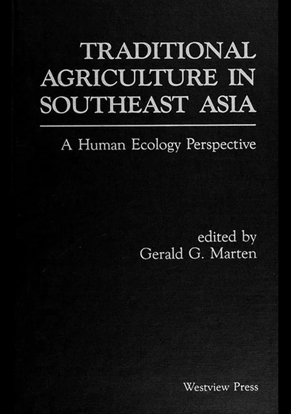

Traditional Agriculture in Southeast Asia
A Human Ecology Perspective
We shouldn’t throw out the baby with the bathwater. Traditional knowledge and practices – products of many centuries of trial and error – are being lost as agriculture modernizes in Southeast Asia. Modern technology may offer higher yields, but traditional agriculture is ecologically sustainable.
- Author: Gerald G. Marten
- Publisher: Westview Press (Boulder, Colorado)
- Publication Date: June 1986, 358 pp.
- ISBN-10: 0813370264
- ISBN-13: 978-0813370262
Table of Contents
Preface, Acknowledgments, Introduction
-
Agriculture in Southeast Asia – Ana Doris Capistrano and Gerald G. Marten
- Rice based Agriculture
- Shifting Cultivation
- Homegardens
- Commercial Field Crops
- Perennial Agroecosystems
- Acknowledgments
- References
-
The Human Ecology Perspective – Gerald G. Marten and Daniel M. Saltman
- Agroecosystem Structure
- Elements of Agroecosystem Function
- Traditional Agroecosystems and Natural Ecosystems
- The Special Role of Mixed Cropping
- Social System Impacts on Agroecosystems
- Agroecosystem Impacts on Social Systems
- Impact of Agroecosystem Function on the Natural Resource Base
- References
-
The Bontok: Traditional Wet Rice and Swidden Cultivators of the Philippines – June Prill-Brett
- Land Classification
- Traditional Rice Crop
- Wet Season Cropping in Rice Paddies
- Swidden Agriculture
- Soil Conservation
- Social Control of Land and Water Resources
- The Role of Ritual
- Impact of the Outer World
- Acknowledgments
- References
-
Traditional Agriculture in Northern Thailand – Katin Srimongkol and Gerald G. Marten
- The Highland Area
- The Lowland Area
- Farmers’ Practices That Merit Further Study
- Acknowledgments
- References
-
Rainfed Cropping Systems in Northeast Thailand – Anan Polthanee and Gerald G. Marten
- Existing Cropping Patterns
- Farmers’ Decision Making
- Existing Cultivation Practices
- Experiences Testing New Cropping Systems
- Conclusions
- Topics for Agroecosystem Research
- Acknowledgments
- References
-
Traditional Agroforestry in West Java: The Pekarangan (Homegarden) and Kebun Talun (Annual Perennial Rotation) Cropping Systems – Linda Christanty, Oekan S. Abdoellah, Gerald G. Marten, and Johan Iskandar
- The Role of Kebun Talun and Homegardens in the Javanese Landscape
- Cropping Structure
- Labor Input
- Food and Income Production
- Conservation Function
- Strategies for the Future
- Contents
- Acknowledgments
- References
-
Socioeconomic Factors and Small Scale Farmers in Southeast Asia – Damrong Thandee
- Subsistence vs. Market Oriented Farming
- Cultural and Social Factors
- Patterns of Land Tenure
- Technology Transfer
- Public Policy
- Acknowledgments
- References
-
Social Organization and Traditional Agroecosystems – Joseph A. Weinstock
- Social Organization and the Environment
- Elements of Social Organization and Their Relations to Agroecosystems
- Acknowledgments
- References
-
Ethnoecology: An Approach to Understanding Traditional Agricultural Knowledge – J. Peter Brosius, George Lovelace, and Gerald G. Marten
- Basic Assumptions of Ethnoecology
- Examples from Traditional Agricultural Societies
- Traditional Conceptualizations of the Environment
- Acknowledgments
- References
-
Soil Management in Traditional Agriculture – Gerald G. Marten and Patma Vityakon
- Traditional Systems of Agricultural Land Classification
- Mixed Cropping and the Soil
- Maintaining Soil Fertility
- Erosion Control
- Acknowledgments
- References
-
Shifting Cultivation and Tropical Soils: Patterns, Problems, and Possible Improvements – Linda Christanty
- Definitions and Classification
- Stages of Shifting Cultivation
- Effects of Shifting Cultivation on Tropical Soils
- Contemporary Problems and Possible Improvements
- References
-
The Ecology of Traditional Pest Management in Southeast Asia – Becky Brown and Gerald G. Marten
- Pest Problems in Traditional Agriculture
- Traditional Pest Management Technology
- The Role of Mixed Cropping
- The Pesticide Dilemma
- Conclusions
- Acknowledgments
- References
-
Trees in Paddy Fields in Northeast Thailand – Somluckrat Grandstaff, Terry B. Grandstaff, Pagarat Rathakette, David E. Thomas, and Jureerat K. Thomas
- Rapid Rural Appraisal
- Why Are There Trees?
- Progression of Trees in Paddy Fields
- Uses of Trees
- Paddy Fields as Multiresource Systems
- Acknowledgments
- Appendix: An Example of Probing
- References
-
The Complementary Roles of Homegardens, Upland Fields, and Rice Fields for Meeting Nutritional Needs in West Java – Oekan S. Abdoellah and Gerald G. Marten
- Research Methods
- Identification of Critical Nutrients
- Nutrient Production
- Impact of Market Involvement
- Mixed Cropping Species Composition
- Optimal Crop Mixes
- Implications for Development
- Acknowledgments
- Appendix: Plants Observed in Homegardens and Agricultural Fields Surveyed in Jatigede Area, West Java
- References
-
Traditional Agriculture and Agricultural Research in Southeast Asia – Gerald G. Marten
- Recent Trends in Agricultural Development
- A Role for Traditional Agriculture
- Natural Ecosystems as Models
- Farmer Scientist Collaboration
- Acknowledgments
- Appendix: Examples of Agricultural Policy Options
- Reference